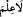

Âdem (a.s.)’a isimlerin bilgisi verilmiştir; çünkü onun rûhu, âlem ağacının tohumu,
zâtı ise bu ağacın meyvesidir. Bundan dolayı Âdem (a.s.)’ın yaratılışı; âlemin
yaratılışının kemâle ermesinden sonradır. Nasıl ki meyve, ağacın bütün kısımlarından
geçerek en üstte yerini alıyorsa, Âdem (a.s.) da mevcûdât ağacının alt ve üst bütün
kısımlarından geçmiş, bu kısımlardan kendisinin faydasına ve zararına olanları
görmüştür. Sonra da Allah’ın kendisine verdiği ilimle zararlı ve faydalı şeylere uygun
isimler vermiştir. İşte bu isimler, meleklerin bilmediği; Allah’ın Âdem’e öğrettiği
isimlerdir. Âdem’in meleklere üstünlüklerinden biri de ona sadece mahlûkatın
isimlerinin değil, Allah’ın isimlerinin celâl ve cemâl yönüyle bildirilmiş olmasıdır.
Böylece insanın yaratılmış, rızka muhtaç, günahkâr, hatâ işler, tevbe edici, fayda ya da
zarar görücü, zâlim ya da mazlûm oluşu karşısında Allah’ın yaratıcı, rızık verici,
afvedici, günahları örtücü, fayda ve zarara mukabele edici, adâleti ve zâlimlerden
intikam alıcı özelliği ortaya çıkmıştır. Bunlara bakarak geri kalanını siz kıyâs ediniz.
[228]. krş. Müslim, Îmân, 259
[229]. Tirmizî, Sıfatu’l-kıyâme, 54
[230]. Irakî, Muğnî, IV, 277 (Deylemî, İbn Mesûd’dan)
[231]. Bu ifâde kesretten kinâye olup, insanların kıyâmete kadar konuşacağı bütün
dilleri ifâde eder.
[232]. Deylemî, hadis no:4097 Münâvî, IV, 361
[233]. Tirmizî, Kıyâmet, 47; Müsned, II, 179
[234]. “Sübhan” genellikle muzaf olarak kullanılan ve masdar yerine kâim bir
isimdir. Eğer izâfet dışında kullanılırsa; “tesbîh” için ism-i alem olur. Sonundaki elif-
nûn maddesi ve ma’rife oluşu sebebiyle gayr-i munsarıfdır.
[235]. (__WORD__) daki “mâ” masdariyedir. Senin bize öğrettiğin ilmin dışında ilmimiz
yoktur demektir. (
) cümlesinde olduğu gibi (
) mahallen merfûdur. “Şüphesiz
sen alîmsin” cümlesindeki ( ) fasıl zamiri olup irabdan mahalli yoktur.
[236]. Aclûnî, I, 433
[237]. Münâvî, III, 460
[238]. Aclûnî, II, 290